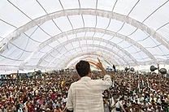
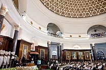
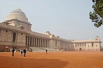

Politics and government
___Politics___
India is the world's most populous democracy. A parliamentary republic with a multi-party system, it has eight recognised national parties, including the Indian National Congress and the Bharatiya Janata Party (BJP), and more than 40 regional parties. The Congress is considered centre-left in Indian political culture, and the BJP right-wing. For most of the period between 1950—when India first became a republic—and the late 1980s, the Congress held a majority in the parliament. Since then, however, it has increasingly shared the political stage with the BJP, as well as with powerful regional parties which have often forced the creation of multi-party coalition governments at the centre.

In the Republic of India's first three general elections, in 1951, 1957, and 1962, the Jawaharlal Nehru-led Congress won easy victories. On Nehru's death in 1964, Lal Bahadur Shastri briefly became prime minister; he was succeeded, after his own unexpected death in 1966, by Nehru's daughter Indira Gandhi, who went on to lead the Congress to election victories in 1967 and 1971. Following public discontent with the state of emergency she declared in 1975, the Congress was voted out of power in 1977; the then-new Janata Party, which had opposed the emergency, was voted in. Its government lasted just over two years. Voted back into power in 1980, the Congress saw a change in leadership in 1984, when Indira Gandhi was assassinated; she was succeeded by her son Rajiv Gandhi, who won an easy victory in the general elections later that year. The Congress was voted out again in 1989 when a National Front coalition, led by the newly formed Janata Dal in alliance with the Left Front, won the elections; that government too proved relatively short-lived, lasting just under two years. Elections were held again in 1991; no party won an absolute majority. The Congress, as the largest single party, was able to form a minority government led by P. V. Narasimha Rao.

A two-year period of political turmoil followed the general election of 1996. Several short-lived alliances shared power at the centre. The BJP formed a government briefly in 1996; it was followed by two comparatively long-lasting United Front coalitions, which depended on external support. In 1998, the BJP was able to form a successful coalition, the National Democratic Alliance (NDA). Led by Atal Bihari Vajpayee, the NDA became the first non-Congress, coalition government to complete a five-year term. Again in the 2004 Indian general elections, no party won an absolute majority, but the Congress emerged as the largest single party, forming another successful coalition: the United Progressive Alliance (UPA). It had the support of left-leaning parties and MPs who opposed the BJP. The UPA returned to power in the 2009 general election with increased numbers, and it no longer required external support from India's communist parties. That year, Manmohan Singh became the first prime minister since Jawaharlal Nehru in 1957 and 1962 to be re-elected to a consecutive five-year term. In the 2014 general election, the BJP became the first political party since 1984 to win a majority and govern without the support of other parties. The incumbent prime minister is Narendra Modi, a former chief minister of Gujarat. On 20 July 2017, Ram Nath Kovind was elected India's 14th president and took the oath of office on 25 July 2017.
___Government___

India is a federation with a parliamentary system governed under the Constitution of India—the country's supreme legal document. It is a constitutional republic and representative democracy, in which "majority rule is tempered by minority rights protected by law". Federalism in India defines the power distribution between the union and the states. The Constitution of India, which came into effect on 26 January 1950, originally stated India to be a "sovereign, democratic republic;" this characterisation was amended in 1971 to "a sovereign, socialist, secular, democratic republic". India's form of government, traditionally described as "quasi-federal" with a strong centre and weak states, has grown increasingly federal since the late 1990s as a result of political, economic, and social changes.
The Government of India comprises three :
-
Executive:
The President of India is the ceremonial head of state, who is elected indirectly for a five-year term by an electoral college comprising members of national and state legislatures. The Prime Minister of India is the head of government and exercises most executive power. Appointed by the president, the prime minister is by convention supported by the party or political alliance having a majority of seats in the lower house of parliament. The executive of the Indian government consists of the president, the vice president, and the Union Council of Ministers—with the cabinet being its executive committee—headed by the prime minister. Any minister holding a portfolio must be a member of one of the houses of parliament. In the Indian parliamentary system, the executive is subordinate to the legislature; the prime minister and their council are directly responsible to the lower house of the parliament. Civil servants act as permanent executives and all decisions of the executive are implemented by them.
-
Legislature:
The legislature of India is the bicameral parliament. Operating under a Westminster-style parliamentary system, it comprises an upper house called the Rajya Sabha (Council of States) and a lower house called the Lok Sabha (House of the People). The Rajya Sabha is a permanent body of 245 members who serve staggered six-year terms. Most are elected indirectly by the state and union territorial legislatures in numbers proportional to their state's share of the national population. All but two of the Lok Sabha's 545 members are elected directly by popular vote; they represent single-member constituencies for five-year terms. Two seats of parliament, reserved for Anglo-Indian in the article 331, have been scrapped.
-
Judiciary:
India has a three-tier unitary independent judiciary comprising the supreme court, headed by the Chief Justice of India, 25 high courts, and a large number of trial courts. The supreme court has original jurisdiction over cases involving fundamental rights and over disputes between states and the centre and has appellate jurisdiction over the high courts. It has the power to both strike down union or state laws which contravene the constitution, and invalidate any government action it deems unconstitutional.
For previous page
click here